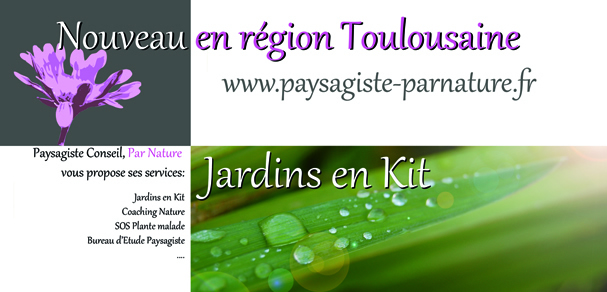
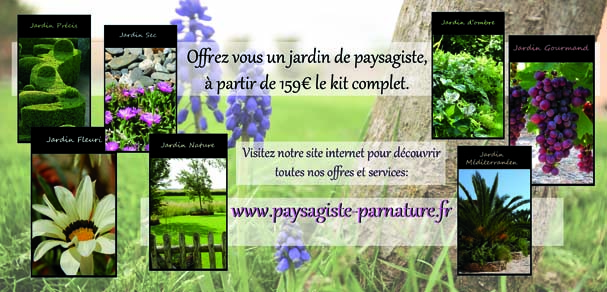

Par Nature est une entreprise du paysage créée en 2012 par un Paysagiste diplômé.
Situé dans la région Toulousaine, le but de Par Nature est de vous apporter tous les services d'un paysagiste et plus encore.
Le service de jardin en kit est une nouveauté Par Nature, il vous permet d'aménager vous même tout ou partie de votre jardin sous les conseils d'un professionel. Par Nature vous fournit tous les documents nécessaires et vous livre vos plantes chez vous ou dans un point relais.
L'ensemble des services de Par Nature sont ouverts aux particuliers, aux entreprises ou aux collectivités.
"Paysagiste par nature, je mets toutes mes compétences à votre service pour que votre jardin fasse peau neuve"

